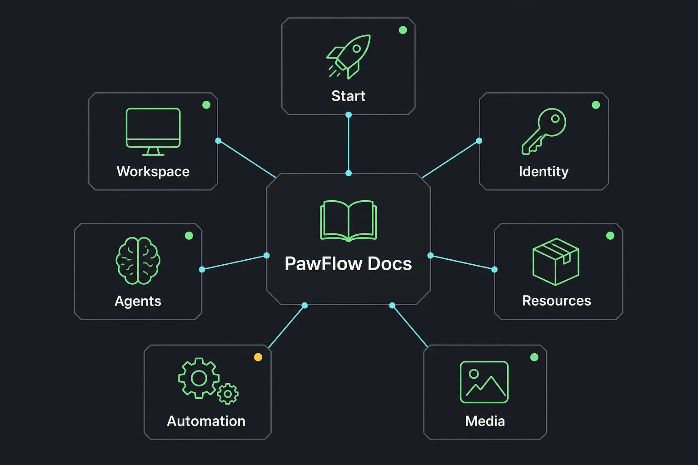

Start
Docs
The shortest route to the right PawFlow document.
This hub groups the repo documentation by task: install, run agents, connect relays, build automations, configure providers, use media tools, and secure a deployment.

Workspace
Webchat tools
Workspace menu overviewDesktop relay accessRelay terminalsContext and memory editorsVS Code/code-serverVS Code extension installTelegram channelMulti-client conversationsVS Code extension docsDesktop, VNC, ScreenIdentity
Auth, files, secrets
OAuth provider setuprclone filesystemsVariables and secretsPrivate Gateway and bansSecurity modelAgents
Runtime and providers
First LLM-backed agentProvider tmux sessionsAgent SystemLLM ProvidersSlash CommandsResources
Depots and marketplace
PawFlow depotsSkills create/import/useMCP, hooks, tools, promptsPFP packagesMarketplaceThemesAutomation
Flows and task engine
Flows explainedMain PawFlow Agent flowTasks and plansDaily digest flowTask CatalogExpression LanguageMedia
Multimodal tools
Image/video/audio servicesTTS/STT setupMedia ToolsVoice CloneTool catalogUse the docs with intent
Start with the quickstart, then jump to the exact subsystem.
The repo docs are deep. This website is the front door: fast orientation first, technical references second.